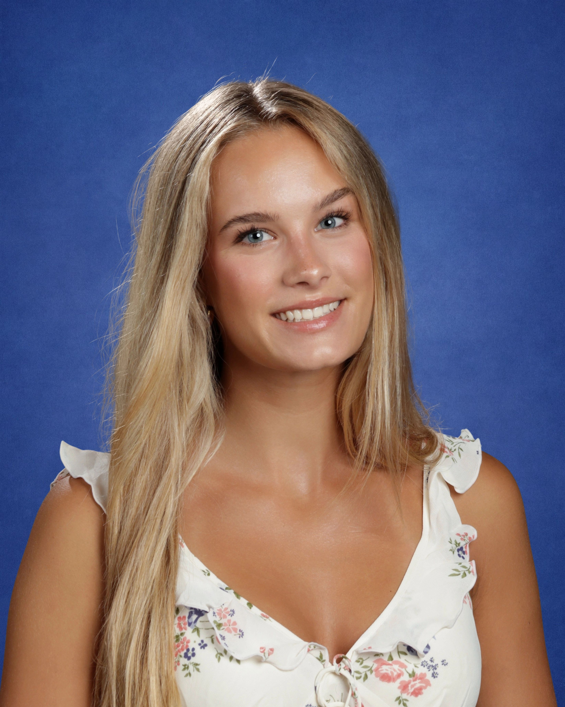

GET TO KNOW ME
A Little More About Me

I am a senior at Seattle Prep in Seattle, Washington, looking forward to graduating in June 2027. I have a strong academic background in STEM and have taken a challenging course load that has allowed me to explore my interests in math, science, computer science, and problem-solving.
My academic curiosity, combined with four years as a varsity track athlete and my upcoming role as team captain, has shaped me into a motivated, hardworking, and collaborative student who enjoys both challenging myself and working with others.
As I look toward college, I plan to continue exploring STEM while keeping an open mind about where my interests may lead me, including the possibility of pursuing law in the future.
Outside of the classroom, track has taught me the value of discipline, leadership, competition, and perseverance, while also giving me a strong sense of community.
I am excited to bring that same energy and curiosity to college, where I hope to continue learning, meet new people, take on new challenges, and discover what comes next.